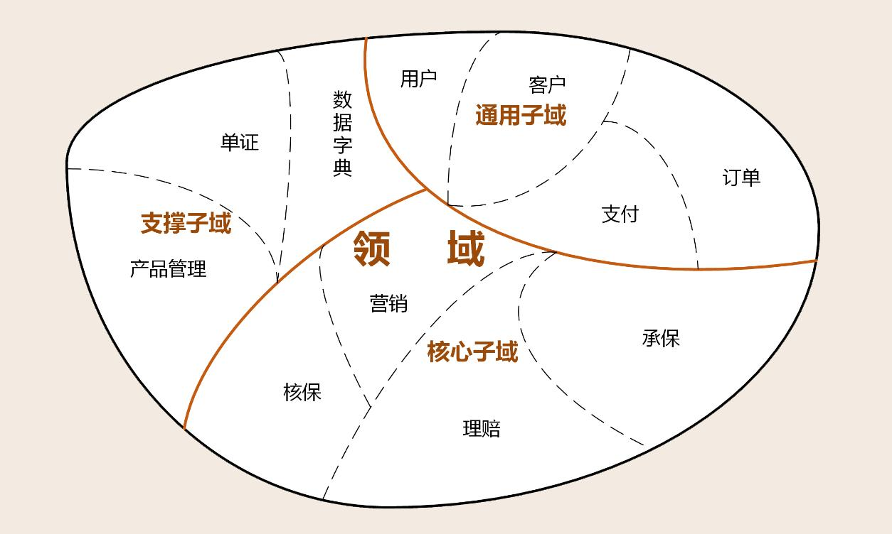

101 DDD
Adding value with annotations, events & tests about DDD.


Agenda
- Who I am
- Context
- What is DDD?
- DDD Process
- Techniques
- Libraries
- Impact in the teams
- References
Context

Context
What activities require more time in your projects?

Context
Data Unified Architecture:

Where is you located?
Context
Example: APIs / Microservices / Lambdas

Source: https://d1.awsstatic.com/whitepapers/microservices-on-aws.pdf
Context
Example: APIs / Microservices / Lambdas

Source: https://aws.amazon.com/es/architecture/icons/
Context
Have that designs an enough detail to create a backlog to start the implementation phase?
Context
Or maybe your design suffer with: Anemic Domain Model

What is DDD?
Domain-driven design (DDD) is the concept that the structure and language of software code (class names, class methods, class variables) should match the business domain.
Source: Wikipedia
What is DDD?

What is DDD?
Core elements:
- Value Objects
- Entities
- Agreggate Root
What is DDD?
Value Object
A value object is a small object that represents a simple entity whose equality is not based on identity: i.e. two value objects are equal when they have the same value, not necessarily being the same object.
Examples: Objects representing an amount of money or a date range
What is DDD?
Entity
In a data model context, describes the structure of data regardless of the stored form.
What is DDD?
Agreggate Root
A collection of entities or value objects that are related to each other through a Aggregate Root object
What is DDD?
Example:
 Source:
https://khalilstemmler.com/articles/typescript-domain-driven-design/aggregate-design-persistence/
Source:
https://khalilstemmler.com/articles/typescript-domain-driven-design/aggregate-design-persistence/
What is DDD?
Example:
 Source:
https://kalele.io/modeling-aggregates-with-ddd-and-entity-framework/
Source:
https://kalele.io/modeling-aggregates-with-ddd-and-entity-framework/
DDD Process
Domain-Driven Design Starter Modelling Process:

Source: https://github.com/ddd-crew/ddd-starter-modelling-process
DDD Process
Understand
Align our focus with the organisation's business model, the needs of its users, and its short, medium, and long-term goals.
DDD Process
Discover
Discover the domain visually and collaboratively.
This is the most crucial aspect of DDD. You cannot skip discovery. If your whole team doesn't build up a good understanding of the domain, all software decisions will be misguided.
DDD Process
Decompose
Decompose the domain into sub-domains - loosely-coupled parts of the domain.
DDD Process
Connect
Connect the sub-domains into a loosely-coupled architecture which fulfills end-to-end business use-cases.
DDD Process
Strategize
Strategically map out your sub-domains to identify core domains: the parts of the domain which have the greatest potential for business differentiation or strategic significance.
DDD Process
Organise
Organise autonomous teams that are optimised for fast flow and aligned with context boundaries.
DDD Process
Define
Define the roles and responsibilities of each bounded context.
DDD Process
Code
Code the domain model.
Techniques
- Event-Storming
- Onion Architecture
Techniques
Event-Storming

Techniques
Event-Storming
Event storming is a workshop-based method to quickly find out what is happening in the domain. The result is expressed in sticky notes on a wide wall. The business process is "stormed out" as a series of domain events which are denoted as orange stickies. Event storming can be used as a means for business process modeling and requirements engineering. The basic idea is to bring together software developers and domain experts and learn from each other.
Techniques
Onion Architecture
 Source:
https://blog.cleancoder.com/uncle-bob/2012/08/13/the-clean-architecture.html
Source:
https://blog.cleancoder.com/uncle-bob/2012/08/13/the-clean-architecture.html
Techniques
Onion Architecture
- The domain package is the core of the application. It consists of two parts. The domainModels packages contain the domain entities. The packages in domainServices contains services that use the entities in the domainModel packages.
Techniques
Onion Architecture
- The applicationServices packages contain services and configuration to run the application and use cases. It can use the items of the domain package but there must not be any dependency from the domain to the application packages.
Techniques
Onion Architecture
- The adapter package contains logic to connect to external systems and/or infrastructure. No adapter may depend on another adapter. Adapters can use both the items of the domain as well as the application packages. Vice versa, neither the domain nor the application packages must contain dependencies on any adapter package.
Libraries
- ArchUnit
- Jmolecules
- Spring Data JDBC
ArchUnit
Jmolecules
Architectural abstractions for Java. Goals:
- Express that a piece of code (a package, class, or method) implements an architectural concept.
- Make it easy for the human reader to determine what kind of architectural concepts a given piece of code is.
- Allow tool integration (to do interesting stuff like generating persistence or static architecture analysis to check for validations of the architectural rules.)
Jmolecules
The library is organized in the following modules:
- jmolecules-ddd
- jmolecules-architecture
- jmolecules-events
Jmolecules
jmolecules-ddd:
 Github:
https://github.com/xmolecules/jmolecules/tree/main/jmolecules-ddd
Github:
https://github.com/xmolecules/jmolecules/tree/main/jmolecules-ddd
Jmolecules
jmolecules-ddd: Annotations to define Domain-Driven Design building blocks.
 Github:
https://github.com/xmolecules/jmolecules/tree/main/jmolecules-ddd
Github:
https://github.com/xmolecules/jmolecules/tree/main/jmolecules-ddd
Jmolecules
jmolecules-ddd:

Jmolecules
jmolecules-architecture:
- jmolecules-cqrs-architecture
- jmolecules-layered-architecture
- jmolecules-onion-architecture
Github: https://github.com/xmolecules/jmolecules/tree/main/jmolecules-architecture
Jmolecules
jmolecules-onion-architecture:

Jmolecules
jmolecules-onion-architecture:

Jmolecules
jmolecules-onion-architecture:
 Source:
https://speakerdeck.com/kiyotakeshi69/spring-fest-2020-express-ddd-using-jpa-x-jmolecules
Source:
https://speakerdeck.com/kiyotakeshi69/spring-fest-2020-express-ddd-using-jpa-x-jmolecules
Jmolecules
jmolecules-onion-architecture: Layers:
 Source:
https://speakerdeck.com/kiyotakeshi69/spring-fest-2020-express-ddd-using-jpa-x-jmolecules
Source:
https://speakerdeck.com/kiyotakeshi69/spring-fest-2020-express-ddd-using-jpa-x-jmolecules
Jmolecules
jmolecules-onion-architecture: